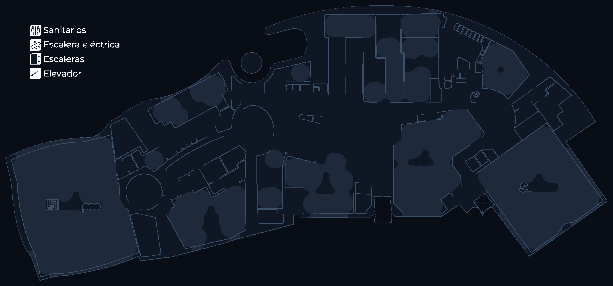

Pantalla del Tótem
Punto 12
9:41
ANUNCIO · STARBUCKS 1N-66
Tu momento.
Tu momento.
Tu Starbucks.
2x1 hasta las 6 pm · Nivel 1
Tótem 1 · Punto 12 (Nivel 1)
☕
Caramel Macchiato
🥤
Frappuccino
🍵
Iced Matcha
📍
TÓTEM INTERACTIVO
📍 UBICACIÓN ACTUAL
Tótem (Punto 12)
Pasillo Chedraui Selecto · Nivel 1
PASO 1 DE 3
Nivel 1
Inicia tu recorrido
Avanza por el pasillo principal
1 min · 90 m
a
Sfera · Nivel 1
Planificador de Rutas
Planta:
Resumen:
90 m
1 min a pie
Mismo nivel
4 pasos guiados
Planta 1 · Nivel Principal
|
63 locales · 12 islas
📍 Tótem (Punto 12)
➤ Flecha GPS
Tienda
Isla
🪜 Escaleras
🛗 Elevador

Guía Visual Paso a Paso
Puntos de control y cambios de dirección